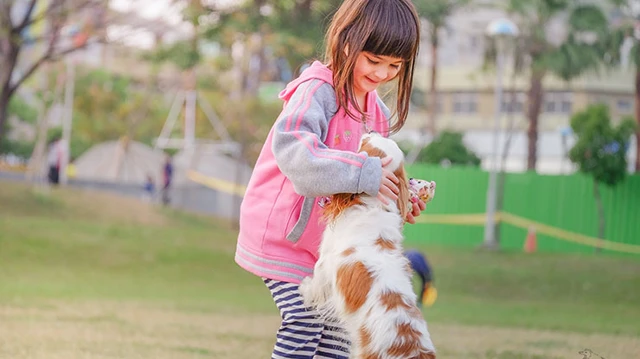

Tips to Stop Unwanted Dog Jumping


As pet owners, we've all experienced the enthusiastic greeting of our dogs, jumping up on us with excitement. While it's natural for dogs to exhibit this behavior, it can be problematic, especially when it involves guests, furniture, or even counters. At our veterinary practice, we understand the importance of addressing this issue to prevent accidents, injuries, and unwanted damage to property. In this article, we will delve into the reasons behind dog jumping, provide expert tips on how to stop dog jumping on people, and offer training solutions to correct this behavior.
Table of Contents
Understanding Dog Jumping Behavior
Dog jumping is often a result of excitement, anxiety, or attention-seeking behavior. Dogs may jump on their owners or guests due to various reasons, including lack of training, inadequate socialization, or excessive energy. It's essential to recognize the underlying causes of dog jumping to develop an effective training plan. We recommend observing your dog's behavior, identifying triggers, and consulting with a professional dog trainer or veterinarian for personalized guidance.
According to our veterinary expertise, dogs that jump on people may be experiencing:
| Reason | Description |
|---|---|
| Attention-seeking | Dogs may jump on people to get attention, affection, or treats. |
| Excitement and playfulness | Dogs may jump on people due to excess energy, playfulness, or enthusiasm. |
| Anxiety and fear | Dogs may jump on people due to anxiety, fear, or insecurity. |
Also Read
Check out more pet care guides hereTraining Dog Not to Jump
To stop dog jumping on people, we recommend a combination of positive reinforcement training, consistent boundaries, and redirecting the dog's attention. Here are some expert tips to get you started:
As a veterinarian, I always advise dog owners to start training their dogs from an early age. Puppy jumping up training is crucial to prevent unwanted behavior in the long run. With patience, consistency, and positive reinforcement, you can teach your dog to greet people calmly and politely.
Our training approach involves:
- Ignoring the dog when it jumps on people
- Rewarding calm behavior with treats and praise
- Redirecting the dog's attention to a toy or a different activity
- Establishing consistent boundaries and rules
For dog jumping on furniture or counters, we recommend providing alternative surfaces for the dog to jump on, such as a dog bed or a designated area. By redirecting the dog's behavior and providing a safe outlet for their energy, you can prevent unwanted damage to property and ensure a safe environment for everyone.
Dog Jumping on Leash Training
Dog jumping on leash can be challenging, especially during walks. To address this issue, we recommend using positive reinforcement training, such as rewarding the dog for walking calmly by your side. You can also use a harness instead of a collar to reduce the dog's pulling and jumping.
Dog Jumping on Strangers Fix
Dog jumping on strangers can be embarrassing and problematic. To prevent this behavior, we recommend socializing your dog extensively, teaching them to greet people calmly, and rewarding them for polite behavior. You can also use a "no jump" command and redirect the dog's attention to a toy or a different activity.
Expert Tips and Common Mistakes
To ensure successful training, we recommend avoiding common mistakes, such as:
- Punishing the dog for jumping
- Providing attention or treats when the dog jumps
- Not establishing consistent boundaries and rules
Instead, we advise dog owners to focus on positive reinforcement training, consistent boundaries, and redirecting the dog's attention. By doing so, you can teach your dog to greet people calmly and politely, preventing unwanted jumping behavior.
Conclusion
In conclusion, stopping unwanted dog jumping requires a combination of positive reinforcement training, consistent boundaries, and redirecting the dog's attention. By understanding the underlying causes of dog jumping, providing alternative surfaces for the dog to jump on, and rewarding calm behavior, you can create a safe and calm environment for everyone. Remember to consult with a professional dog trainer or veterinarian for personalized guidance and support. With patience, consistency, and positive reinforcement, you can teach your dog to greet people politely and prevent unwanted jumping behavior.
Dr. Amelia Richardson
DVM, Senior Veterinary Editor
Veterinarian with 12+ years of experience in small animal medicine, pet nutrition, and behavioral science. Passionate about helping pet owners provide the best care for their furry companions.
Leave a Comment